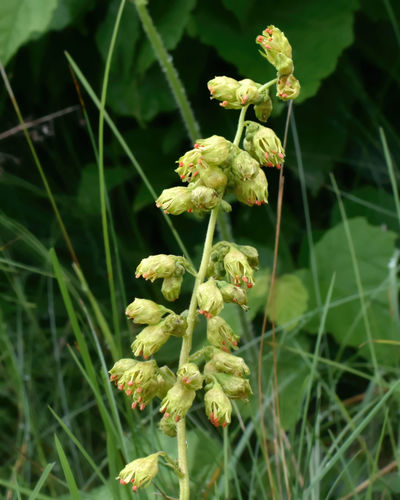

Augochlorella aurata
Augochlorella aurata native bee
Metallic green sweat bees reaching the prairies.
17 documented plant relationships.
sips nectar at
 Joshua Mayer, some rights reserved (CC BY-SA)") Blue-eyed GrassSisyrinchium montanum
Blue-eyed GrassSisyrinchium montanum Boreal YarrowAchillea borealis
Boreal YarrowAchillea borealis
Common AlumrootHeuchera richardsonii Andreas Stiller, some rights reserved (CC BY), uploaded by Andreas Stiller") Late GoldenrodSolidago giganteaMany-flowered Aster (Tufted White Prairie Aster)Symphyotrichum ericoidesMaximilian SunflowerHelianthus maximiliani
Late GoldenrodSolidago giganteaMany-flowered Aster (Tufted White Prairie Aster)Symphyotrichum ericoidesMaximilian SunflowerHelianthus maximiliani Joshua Mayer, some rights reserved (CC BY-SA)") Prairie RoseRosa arkansanaPurple ConeflowerEchinacea angustifoliaPurple Prairie CloverDalea purpurea
Prairie RoseRosa arkansanaPurple ConeflowerEchinacea angustifoliaPurple Prairie CloverDalea purpurea Harvey Barrison, some rights reserved (CC BY-SA)") Sandbar WillowSalix interior
Sandbar WillowSalix interior Slender Cinquefoil (Graceful Cinquefoil)Potentilla gracilis
Slender Cinquefoil (Graceful Cinquefoil)Potentilla gracilis aarongunnar, some rights reserved (CC BY), uploaded by aarongunnar") Smooth AsterSymphyotrichum laeveSmooth Fleabane (Streamside Fleabane)Erigeron glabellus
Smooth AsterSymphyotrichum laeveSmooth Fleabane (Streamside Fleabane)Erigeron glabellus tzeducation, some rights reserved (CC BY), uploaded by tzeducation") Wild BergamotMonarda fistulosa
Wild BergamotMonarda fistulosa Pohled 111, some rights reserved (CC BY-SA)") Wild ChivesAllium schoenoprasum
Wild ChivesAllium schoenoprasum Abby Hyde, some rights reserved (CC BY), uploaded by Abby Hyde") Wild StrawberryFragaria virginiana
Wild StrawberryFragaria virginiana Kevin Krebs, some rights reserved (CC BY), uploaded by Kevin Krebs")